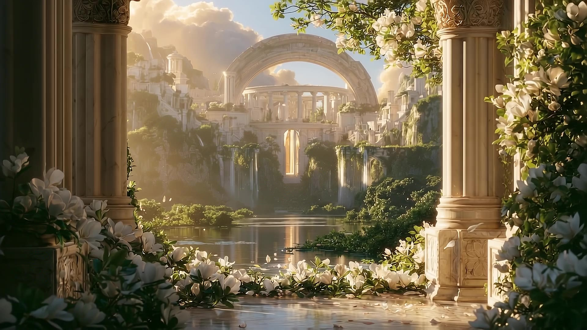

Aerizel
A world beyond the ordinary.
The Stormbearer
As the thunderbird opens its wings, the blade falls quiet.


EXPLORE AERIZEL
The wider world of Aerizel.
ABOUT AERIZEL
An instinct for
the extraordinary.
I create with AI, drawn to hidden details in nature, atmospheric landscapes, and worlds that exist somewhere beyond the familiar.
This is my little corner of the internet — a collection of images I love, and a doorway to everything I’m making.
Explore my world